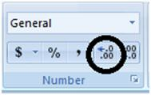
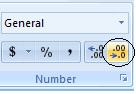

Mengatur jumlah desimal
Tombol Increase Decimal dan Decrease Decimal mengubah tampilan, bukan nilai yang disimpan. Untuk mengubah nilainya, pakai ROUND.
Coba langsung di browserLembar kerja mini, kuis, dan tanda selesai.
Buka versi interaktifLangkah praktik
- Blok sel angka.
- Home > Increase Decimal untuk menambah angka di belakang koma, Decrease Decimal untuk menguranginya.
- Bila hasil harus benar-benar dibulatkan, pakai =ROUND(sel; jumlah_desimal).
Tangkapan layar praktik
2 gambar langkah demi langkah. Klik gambar untuk membuka ukuran penuh.

